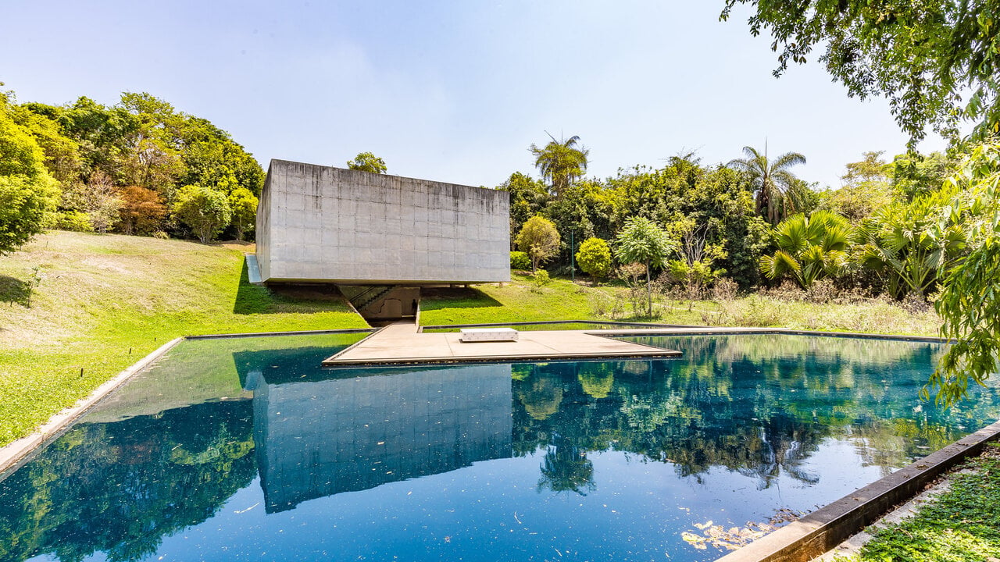
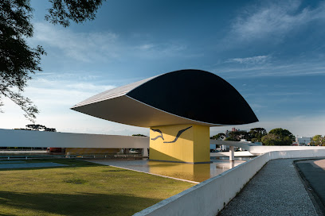

|  |
InhotimO Museu de Inhotim, situado na encantadora cidade de Brumadinho, a cerca de 60 km de Belo Horizonte, se destaca entre os demais museus por sua proposta única de ser a céu aberto, integrado a uma vasta área verde. |
|
|  |
Museu Oscar NiemeyerO Museu Oscar Niemeyer (MON), localizado em Curitiba, é popularmente conhecido como "Museu do Olho" devido ao seu formato peculiar, que remete a um olho estilizado. O museu abriga um acervo impressionante de aproximadamente 2 mil peças.Concebido pelo renomado arquiteto Oscar Niemeyer, o prédio do museu é uma verdadeira obra de arte em si mesmo. Sua arquitetura moderna e futurista chama a atenção dos visitantes, oferecendo uma experiência visual única antes mesmo de adentrar suas galerias. No interior do MON, os visitantes têm a oportunidade de apreciar obras de importantes artistas, entre eles destacam-se nomes como Tarsila do Amaral e Cândido Portinari. |
|
 |
Instituto Ricardo BrennandO Museu Ricardo Brennand, em Recife, é um dos museus do Brasil que mais recebem visitantes — cerca de 2 milhões de pessoas passam por lá a cada ano! |
|